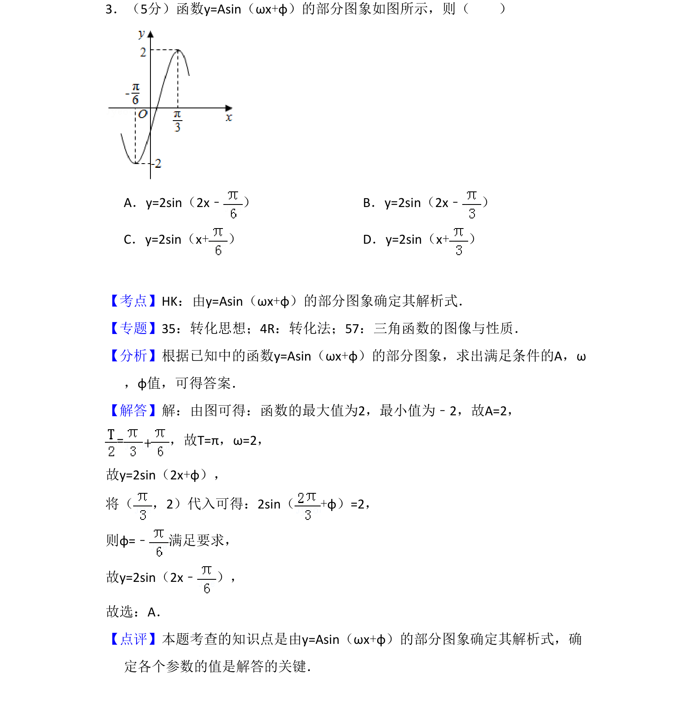
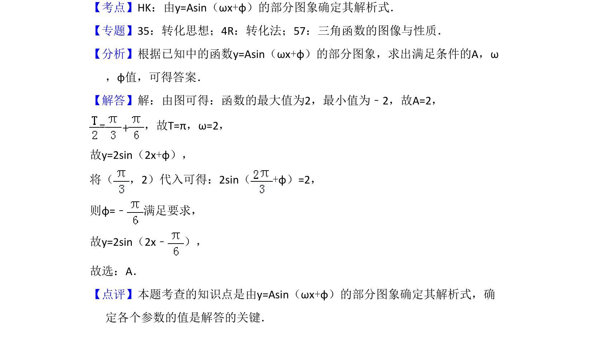

考点：由图象求解析式 三角函数图象与性质

本题通过部分图象求三角函数y=Asin(ωx+φ)的解析式，确定振幅、周期和初相。

📄 原 PDF 第 2 页：
素材/真题/吉林/2008-2024·（吉林）数学高考真题/2016年高考数学试卷（文）（新课标Ⅱ）（解析卷）.pdf
3．（5分）函数y=Asin（ωx+φ）的部分图象如图所示，则（ ） A．y=2sin（2x﹣ ）B．y=2sin（2x﹣ ） C．y=2sin（x+）D．y=2sin（x+）
【考点】HK：由y=Asin（ωx+φ）的部分图象确定其解析式．菁优网版权所有 【专题】35：转化思想；4R：转化法；57：三角函数的图像与性质． 【分析】根据已知中的函数y=Asin（ωx+φ）的部分图象，求出满足条件的A，ω ，φ值，可得答案． 【解答】解：由图可得：函数的最大值为2，最小值为﹣2，故A=2， =，故T=π，ω=2， 故y=2sin（2x+φ）， 将（ ，2）代入可得：2sin（+φ）=2， 则φ=﹣ 满足要求， 故y=2sin（2x﹣ ）， 故选：A． 【点评】本题考查的知识点是由y=Asin（ωx+φ）的部分图象确定其解析式，确 定各个参数的值是解答的关键．